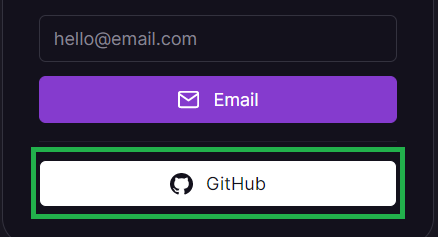
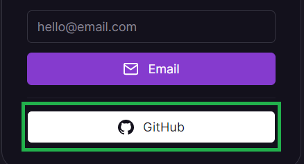
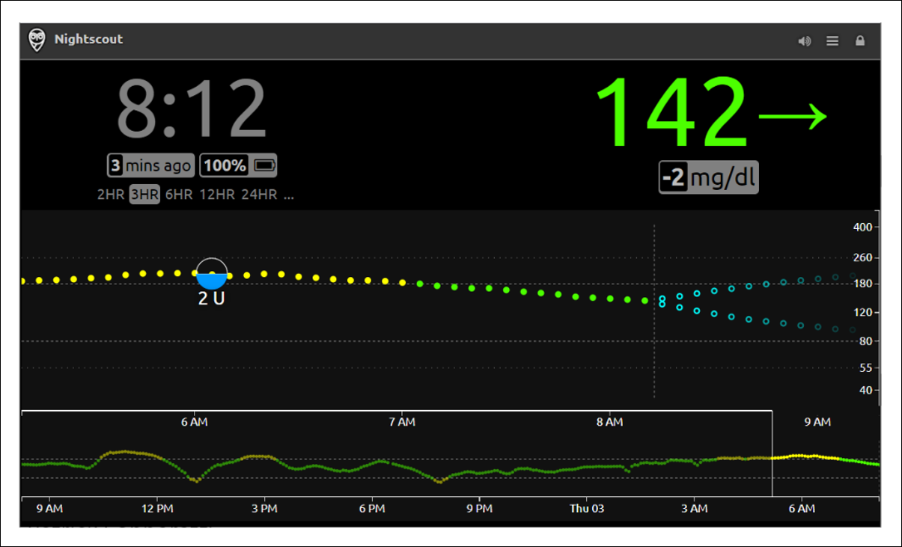

Nightscout in Railway
Too complicated? Not what you’re looking for?
Consider a hosted Nightscout service! Check for easier solutions here.
Warning
The free plan has been removed Jul 3rd for new users and Aug 1st for existing users.
Railway.app

You can easily create a new Railway Nightscout site with a MongoDB Atlas database or a Railway MongoDB database.
Pros:
Nightscout fits in the 5$/month Hobby account
Easy to deploy or migrate an existing site from Heroku
Simple to use and troubleshoot
You can host several Nightscout sites within a single Hobby account
Can use a native Railway MongoDB database ($)
Cons:
The railway.app domain is blocked for safety by some companies
Railway network model causes issues with some follower app and devices
Set up a new Nightscout
Create your Railway and GitHub accounts from a computer.
Note
Do not change device/computer/browser during the setup process!
If you have unexpected issues when creating your site, restart with another browser.
Step 0: Create a database
Note
Make sure you created one before starting your Nightscout web app creation with Railway. Come back here when you have a MONGODB_URI connection string.
Migrating?
Copy the connection string from your previous platform: edit the variables and look for MONGODB_URI.
If you don’t see MONGODB_URI but see MONGO_CONNECTION (NOT MONGO_COLLECTION): use its value.
Step 1: Fork cgm-remote-monitor
Do you have a GitHub account?
Continue with Step 2.
You cannot connect Railway to GitHub if you just created your account. Your GitHub account needs to have been created months ago. Consider another platform.
{kind=link}
Update your Nightscout fork
Click here to log in at GitHub: https://github.com/login.
Enter your username or email and your password. Click
Sign in

Select your own
cgm-remote-monitorproject (notnightscout/cgm-remote-monitor)

Your repository will open. If you see
This branch is xxx commits behind nightscout:masteryou need to update.Select
Fetch upstream
{kind=link}
Select
Fetch and merge

After a moment, your repository should display
This branch is up to date with nightscout:master

You have now updated your GitHub cgm-remote-monitor repository.
If you ran into trouble, you can redeploy the project.
Step 2: Create a Railway account
If you already have a Railway account, make sure you have a Hobby plan: go to step g).
a) Open Railway in a new browser tab and click login. Login with GitHub.
 

{kind=link}
b) If the following screen shows-up, select Authorize Railway App.

c) Click on Please agree to the new terms to keep on using Railway.

d) Scroll down and click I agree with Railway's Terms of Service.
{kind=link}
e) Scroll down and click I will not deploy any of that.

Warning
The free plan has been removed Jul 3rd for new users and Aug 1st for existing users.
f) You should now see this. You’ve created your Railway account.
If it still shows 200 hours, refresh your browser page.

g) Upgrade your account to a Hobby plan. Click on the Starter Plan information and select Remove Resource Limits.

Enter your credit card information and select Subscribe to a Hobby Plan.

Your card will be billed 1$ that will be refund immediately. Bank fees won’t be refund.
You will be billed 5$ per month.
Step 3 - Deploy Nightscout in Railway
Select below how you want to do this:
a) Click on Create a New project.

If you don’t see that, top right, click + New Project.

b) Select Empty project.

c) Select Add a Service.
{kind=link}
d) Select Docker Image.

e) In the field Name of the Image type:
nightscout/cgm-remote-monitor:latest
and press <Enter>
{kind=link}
f) Select your new service.

g) Select Add variables.

h) Now we need to setup our Nightscout variables.
Click on Raw Editor.

The raw editor will open, leave it like this for now.
{kind=link}
i) Compile the information below.
File all necessary fields, click on the Validate button at the bottom of the form, if no error is seen you will have all variables displayed in the text box at the bottom, click on the Copy All button.
{kind=link}
Mandatory variables
These three variables below must have a value.
MONGODB_URI
The MongoDB Connection String to connect to your MongoDB cluster. If you don’t have this from your Mongo database, please re-read installation instructions at Nightscout database before continuing
API_SECRET
A passphrase that must be at least 12 characters long. Avoid special characters, which can cause problems in some cases
DISPLAY_UNITS
Preferred BG units for the site: `mg/dl` or `mmol/l` (or just `mmol`)Customizations
Leave default values if you don’t want to change them
CUSTOM_TITLE
The display name for the Nightscout site. Appears in the upper left of the main view. Often set to the name of the CGM wearer
THEME
Default setting for new browser views for the color theme of the CGM graph. (`default` `colors` or `colorblindfriendly`)ENABLE
Plugins to enable for your site. Must be a space-delimited lower-case list. Include the word bridge here if you are receiving data from the Dexcom Share service
SHOW_PLUGINS
Default setting for whether or not these plugins are checked (active) by default not merely enabled. Include plugins here as in the ENABLE line; space-separated and lower-case
TIME_FORMAT
Default setting for new browser views for the time mode. (`12` or `24`)NIGHT_MODE
Default setting for new browser views for whether Night Mode should be enabled. (`on` or `off`)BOLUS_RENDER_OVER
U value over which the bolus values are rendered on the chart if the x U and Over option is selected
Dexcom Share
If you want Nightscout to import directly from Dexcom Share
BRIDGE_USER_NAME
Your Dexcom account username to receive CGM data from the Dexcom Share service. Also make sure to include bridge in your ENABLE line.
BRIDGE_PASSWORD
Your Dexcom account password to receive CGM data from the Dexcom Share service. Also make sure to include bridge in your ENABLE line
BRIDGE_SERVER
If you are bridging from the Dexcom Share service and are anywhere *outside* the US change this to EU. (`US` or `EU`)Alarms
You can customize alarms or leave them to default values
ALARM_TYPES
`simple` and/or `predict`v. Simple alarms trigger when BG crosses the various thresholds set below. Predict alarms use a formula that forecasts where the BG is going based on its trend. You will *not* get warnings when crossing the BG thresholds set below when using the predict typeALARM_URGENT_HIGH
a) Click on the Deploy on Railway button below:

Note: this is a private template as the community doesn’t have a Railway account.
It doesn’t include any referral code.
b) If you see this screen, select Connect GitHub to Deploy.

Then select Authorize Railway App.
c) Click Configure

d) Click Install & Authorize
{kind=link}
e) You will then see this page, scroll down to define the required variables for creating your Nightscout site.
{kind=link}
Mind if you see this you must delete thecgm-remote-monitor fork in GitHub and retry Deploy from a) afterwards.

f) Setup your Nightscout core variables.
API_SECRET will be your Nightscout site password, it needs to be at least 12 characters long and you should NOT use spaces if you use @ or ! symbols remember you will probably need to express them using Percent encoding in your uploader and downloader apps. If you’re not sure on how to do this, it is recommended to use only letters (uppercase + lowercase) and digits.
Warning
The API_SECRET is the main password allowing full access to your Nightscout site. Make sure it’s reasonably secure (mix uppercase and lowercase letters, plus digits) and do no not share it publicly. If you think you exposed it by mistake, it is recommended that you change it.

g) At Step 3 you created your database and came back with a MONGODB_URI string. Time has come to use it here.

Dexcom Bridge
h) If you use Dexcom bridge you need to configure these two variables with your Dexcom credentials:
{kind=link}
{kind=link}
If you’re using Dexcom Share in the US you should put US, in any other case it must be EU.
If you don’t see it proposed at this point you’ll need to browse the list below to find it and modify it.
{kind=link}
Remember to add bridge at the end of the enable variable in the list below.
MOST COMMON ERRORS
The most common error on initial Nightscout setups is that people incorrectly use an old account or an old password. To test your username and password, go to Dexcom’s Clarity page (check here for USA accounts and here for the others) and try logging in to your Dexcom account. If your account info isn’t valid, or you don’t see any data in your Clarity account… you need to figure out your actual credentials before moving ahead. See here for troubleshooting tips and information on your Dexcom account.
Password
Some people have had problems with their bridge connecting when their Dexcom passwords are entirely numeric. If you have connection issues in that case, try changing your password to something with a mix of numbers and letters.
Hint
You need to have at least one follower to use Dexcom Share. See here.
i) Many optional variables are already setup for you, open the caret to see them and eventually modify them (recommended).
{kind=link}
Select the units you’re using in DISPLAY_UNITS acceptable choices are mg/dl or mmol/L (or just mmol).

You can update the alarms values. See here for the meaning of each one.
{kind=link}
If you want to ensure that ONLY someone with permission to view your site (e.g., a token or the API_SECRET) is able to view the data, you should configure the AUTH_DEFAULT_ROLES variable in as denied.
If you want your site to be visible to anybody leave it as readable.
{kind=link}
A common list of enable variables is predefined, you can change them if you know why.
It’s recommended that you leave them like this for now.
Just remember to add bridge at the end if your get your BG values from Dexcom Share.

You can modify the variables values, check the documentation for the meaning of each one.
Make sure you don’t make typo errors, some will crash your site (like for example LANGUAGE value in upercase).
j) You can now Deploy, and wait until it is complete.

If you see this message, deploy didn’t complete, let’s fix this manually.
{kind=link}
j1) Select Settings and scroll down to Service.
Disconnect your Source Repo with the cross at the end of the line.

j2) Confirm Disconnect.

j3) Select Connect Repo.

You should be able to select your GitHub cgm-remote-monitor repository.

Your Railway app will now automatically deploy.
Recommended
You should change your Railway site name now in order to make it easier to remember. You can also do this later, before setting your uploaders.
a) Click on Create a New project.
If you don’t see that, top right, click + New Project.
b) Select Deploy from GitHub repo.

c) Select Configure GitHub App.

d) Choose Only select repositories, in the Select repositories drop-down select your own fork of cgm-remote-monitor.
Then, at the bottom, click Install & Authorize.

e) You should be back to Deploy from GitHub repo, select it.
f) Now you can select your own GitHub repository.
g) Select Add variables.
h) The Nightscout project will deploy in the background, just ignore it: now we need to setup our Nightscout variables.
Click on Raw Editor.
The raw editor will open, leave it like this for now.
i) Compile the information below.
File all necessary fields, click on the Validate button at the bottom of the form, if no error is seen you will have all variables displayed in the text box at the bottom, click on the Copy All button.
Mandatory variables
These three variables below must have a value.
MONGODB_URI
The MongoDB Connection String to connect to your MongoDB cluster. If you don’t have this from your Mongo database, please re-read installation instructions at Nightscout database before continuing
API_SECRET
A passphrase that must be at least 12 characters long. Avoid special characters, which can cause problems in some cases
DISPLAY_UNITS
Preferred BG units for the site: `mg/dl` or `mmol/l` (or just `mmol`)Customizations
Leave default values if you don’t want to change them
CUSTOM_TITLE
The display name for the Nightscout site. Appears in the upper left of the main view. Often set to the name of the CGM wearer
THEME
Default setting for new browser views for the color theme of the CGM graph. (`default` `colors` or `colorblindfriendly`)ENABLE
Plugins to enable for your site. Must be a space-delimited lower-case list. Include the word bridge here if you are receiving data from the Dexcom Share service
SHOW_PLUGINS
Default setting for whether or not these plugins are checked (active) by default not merely enabled. Include plugins here as in the ENABLE line; space-separated and lower-case
TIME_FORMAT
Default setting for new browser views for the time mode. (`12` or `24`)NIGHT_MODE
Default setting for new browser views for whether Night Mode should be enabled. (`on` or `off`)BOLUS_RENDER_OVER
U value over which the bolus values are rendered on the chart if the x U and Over option is selected
Dexcom Share
If you want Nightscout to import directly from Dexcom Share
BRIDGE_USER_NAME
Your Dexcom account username to receive CGM data from the Dexcom Share service. Also make sure to include bridge in your ENABLE line.
BRIDGE_PASSWORD
Your Dexcom account password to receive CGM data from the Dexcom Share service. Also make sure to include bridge in your ENABLE line
BRIDGE_SERVER
If you are bridging from the Dexcom Share service and are anywhere *outside* the US change this to EU. (`US` or `EU`)Alarms
You can customize alarms or leave them to default values
ALARM_TYPES
`simple` and/or `predict`v. Simple alarms trigger when BG crosses the various thresholds set below. Predict alarms use a formula that forecasts where the BG is going based on its trend. You will *not* get warnings when crossing the BG thresholds set below when using the predict typeALARM_URGENT_HIGH
Log in Heroku https://id.heroku.com/login

Leave the Heroku page opened and return to the Railway page.
If you cannot log into Heroku, select another deployment option (just above) and reuse your existing Atlas database connection string.
a) Click on Create a New project.
If you don’t see that, top right, click + New Project.
b) Select Deploy from GitHub repo.
Select Configure GitHub App.
c) Choose Only select repositories, in the Select repositories drop-down select your own fork of cgm-remote-monitor.
Then, at the bottom, click Install & Authorize.
You should be back to Deploy from GitHub repo, select it.
d) Now you can select your own GitHub repository.
e) Select Add variables.
f) The Nightscout project will deploy in the background, just ignore it: now we need to import all variables from Heroku.
When you see this, press simultaneously the keys Ctrl and K.
If you use a Mac ⌘ and K.
{kind=link}
g) Select Import variables from Heroku.

h) Click Connect Heroku account.

Click Allow.

i) Redo Ctrl K (or ⌘ K and select Import variables from Heroku. Now you can select your Nightscout app.
{kind=link}
j) Wait until import completes.
Your site will redeploy, wait until redeploy completes.
Congratulations. You created your new Nightscout site with Railway.
Click the site name to open Nightscout.

New Nightscout Setup
a) Your Nightscout site should open and direct you to a new profile creation.

b) Setup your Time zone and eventually all other fields. Do not leave any fields empty. If you don’t know which value to use, just use the default value. You can change these values later at any time.

c) Browse down to Authentication status and click Authenticate. Enter your API secret. Click Update.

d) Click Save.

e) If the following pop-up shows up click OK, and check status (upper right of the window).

f) If you need to modify your profile after this, authenticate with the lock icon (top right of the page): enter your API secret. Then click on the hamburger menu and select Profile Editor.

Privacy warning
Anyone with access to the URL of your Nightscout site, can view your BG and run reports of your data. It it strongly recommended that you enable security to your site once you’re done with the setup
g) Dexcom Share users should see data flowing in after some minutes. xDrip+ users (including Medtronic CareLink followers) should setup the uploader as shown here. xDrip4iOS users here. AAPS and Loop: consult the relative documentation.
{kind=link}
You have completed a new Nightscout site creation. You can continue here now.
The following section provides more information that you might not need to use now.
Change your Nightscout site name
Railways automatically makes a name when creating your new site. It is rather difficult to remember.
You can change the site name but need to keep the .up.railway.app domain.
Select your Nightscout app
Go in
SettingsIn
Domains(orNetworkingwith Docker) go to the end of line and click the edit iconWrite your new name and check it’s available
Click
UpdateYour Nightscout URL will now be
https://yoursitename.up.railway.app

Change all your uploaders and follower devices to reflect the new URL once verified correct functioning of your Nightscout site.
You have completed a new Nightscout site creation. The following section provides more information for database migration and variables edition that you might not need to use now.
Editing Variables in Railway
Method 1 - Web interface
This is recommended when you only need to edit or add few variables.
a) Open Railway and click login. Login with GitHub.
b) Select your Nightscout project.

c) Select your web app.

d) Click on Variables.

e) You can perform various operations on your variables:
Add a new variable with
+ New VariableView the variable value with
Show ValueEdit or delete the variable or its value with the line end menu
{kind=link}
Note that each variable modification will redeploy your project.
Method 2 - Raw Editor
This is recommended when you must perform lots of changes to avoid multiple project redeploys.
a) Open Railway and click login. Login with GitHub.
b) Select your Nightscout project.
c) Select your web app.
d) Click on Variables.
e) Click on RAW Editor top right

f) You can access all your variables in a text editor, each line contains the variable name, the sign = then its corresponding value.
VARIABLE=value
Perform all your changes taking care of uppercase and lowercase information and click Update Variables when finished.

Once saved your project will redeploy.
If deploy fails, check your modifications…